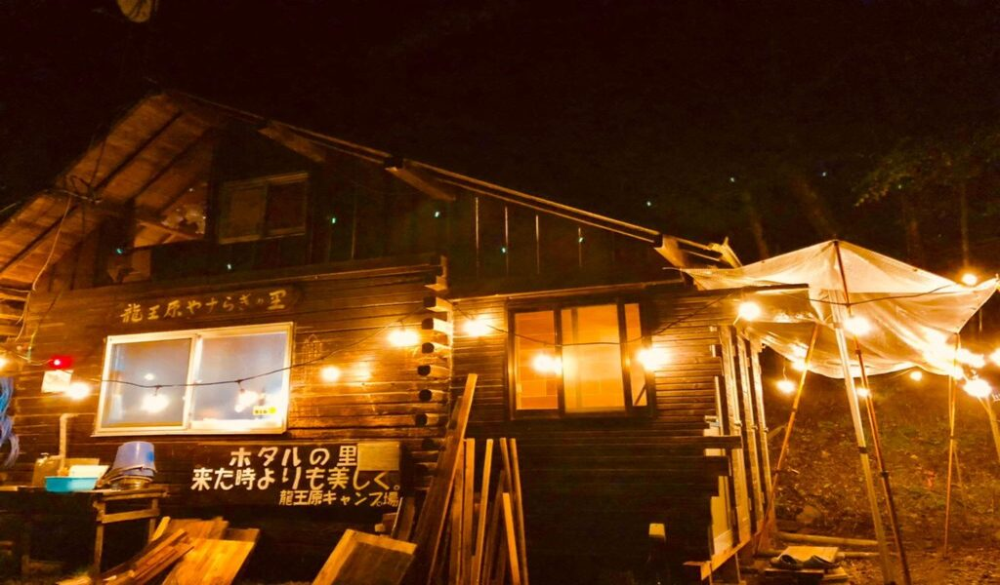

２０２０年の夏、『龍王原やすらぎの里キャンプ場』を譲り受けました。
『龍王原やすらぎの里キャンプ場』は前オーナーが約20年前、木の伐採から3年かけてすべての施設を手作りしスタート、そして８年前に閉鎖されました。
私たちは10年来、このキャンプ場で年中楽しみ、子どもたちは自然の中で自由に遊び学び大きくなりました。６月には蛍が乱舞、夏は涼しく川遊びや釣り、秋冬はたき火を囲みのんびりとできる素敵な場所、たくさんの思い出があるキャンプ場、いつもやすらぎを与えてくれたキャンプ場がこのまま朽ちて行くのは悲しすぎる、そんな思いでいっぱいでした。
2年後のオープンを目標にゆっくり週末を利用し笑顔あふれるキャンプ場とRVパークを愛情込めて手作りしてきました。
皆さんにお力添えいただいたおかげで、２０２２年11月ようやくプレオープンする事ができました。
まだまだ未完成ですが皆さんに愛されるキャンプ場を目指して、これからも夫婦力を合わせて頑張って行きます。どうぞよろしくお願いいたします。
